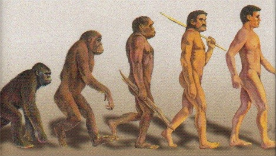

| Feature Article - October 2003 |
| by Do-While Jones |
The theory of evolution has evolved to conform to popular opinion. That's because it is philosophy, not science.
Sometimes it is hard to tell philosophy from science. It is easy to get confused because sometimes a philosophy can be based on science. Let's look at an example.
It is a scientific fact that (using the latest technology) food can be genetically modified by transferring genetic material from one living thing to another. This is a process that can be repeated in the laboratory. It can be experimentally verified. There is no question that food can be genetically altered. That is science.
There are some people who think that genetically modified foods will solve the problem of world hunger. They think that genetically modified foods can be developed that will grow anywhere, resist pests, and produce abundant crops. At the other extreme there are people who think that genetically modified foods might in some unexpected way harm the people who eat them. They think that if genetically modified foods escape the laboratory and reproduce in the wild, that they will upset the ecology to such an extent that all life on Earth could be threatened. Of course, there are people who hold opinions on a continuum between these two extremes. Some people in the middle think that there will be no more effect on society than that produced by traditional products such as hybrid corn.
Whatever one believes about the virtue, danger, or irrelevance, of genetically modified foods is really a matter of opinion. The optimism, pessimism, and ambivalence, can all be justified with reasonable arguments. Beliefs about the impact of genetically modified foods upon our world are philosophical beliefs. All these conflicting opinions are based partly on scientific data, but that does not make the opinions scientific facts. Nor does the scientific basis of the facts guarantee that the reasoning used to interpret the importance of those facts will be correct.
The majority opinion about genetically modified foods is likely to change one way or another. That does not mean that "truth changes." Scientific truth is not determined by majority rule. What philosophers consider to be true will change, but the scientific facts upon which one bases that philosophy will not change.
Sometimes philosophy can be based on faulty assumptions. These faulty assumptions can be mistaken for scientific fact. Assumptions can certainly change once one discovers that the assumptions were wrong.
What brings this topic up is the confusion of evolutionary philosophy with scientific fact. The theory of evolution keeps changing because it is a philosophical opinion, not a scientific observation. This is clearly seen in the undeniable historic relationship between evolution and racism.
Now, before anyone jumps to any conclusions, let's make a few things perfectly clear. We are not going to say, or imply, that evolutionists were any more or any less racist in the 19th century than creationists were in the 19th century. We are not going to say, or imply, that 21st century evolutionists are any more or any less racist than 21st century creationists. We are not going to say, or imply, that the theory of evolution is used as a tool for advancing a racist agenda in public schools today.
This is what we ARE going to say. We are going to say that the historically prevailing views of race are reflected in the theory of evolution to a large extent. Furthermore, the changing public attitude toward race has reshaped the theory of evolution. This is, we believe, evidence that the theory of evolution is based upon changing philosophical ideas about the nature of man and is not based on unbiased analysis of scientific facts. If the theory of evolution were based entirely on scientific facts, then it would not be driven by prevailing public opinion.
Having said that, we now need to show that the prevailing attitude toward race has, in fact, influenced the theory of evolution.
It is unfortunate that the historical facts happen to involve attitudes toward race because race is such a sensitive issue to some people that it is difficult for them to consider the issue rationally. If you are someone who feels strongly about the race issue, please try to remember that our only point is that there was a time the prevailing public opinion was that there was a significant difference between "savages" and "civilised people" (to use Darwin's terminology and spelling). The theory of evolution was seen as proof for that philosophical idea. Now that the vast majority of evolutionists no longer ascribe to racist views, the theory of human evolution is trying to change to become more politically correct.
We may have forgotten how attitudes about all sorts of things, not just race, have changed over the centuries. Modern American society doesn't typically read books like Oliver Twist, A Tale of Two Cities, or The Hunchback of Notre Dame for pleasure. Modern movies like Titanic pretended to deal with issues like class envy, but the movie really dealt with the issue from a late twentieth-century perspective. No doubt, the movie would not have been as great a box office success if the characters had expressed early twentieth-century attitudes. It can be eye-opening to read literature written in previous centuries because literature reveals a much different perspective than we have today.
That's why most people would be shocked to read Chapter 7 ("On the Races of Man") of Darwin's Descent of Man, which was written in 1871. He begins the chapter by discussing whether or not the various races should be considered separate species. Today it would be outrageous to merely entertain that suggestion, let alone discuss it seriously in depth. But, in those days, it was a ho-hum issue of merely academic interest. Almost everyone believed that some races were better than others, but they weren't sure if that was because different races of men were actually different species or not.
Darwin takes a long time to make his point. You have to read a long time before you can tell which side he is on, and even then you might not be sure.
Darwin starts out by saying that the different races of man are actually different species because, when they intermarry, they are sterile. But then he says that he has read some things that indicate that when whites mate with non-whites, they do actually produce offspring, but the offspring are very feeble and sterile. Then he quotes dubious literature that indicates that sometimes interracial marriages produce healthy children, but this may be the exception rather than the norm.
Let's digress here a moment to distinguish truth from fiction. It has always been true that people of different sexes from different races can produce fertile offspring. That is a scientific fact. Scientific facts don't change.
The scientific literature Darwin read contained conflicting and inaccurate information. Darwin, like nearly everyone else of his time, was predisposed to believe that people who look different are different species. After all, animals that look different are different species. Therefore, people of different races should not produce fertile offspring because they, too, are different species.
So, it seemed to Darwin that reports of fertile offspring must be inaccurate. But, he was wise enough to hedge his bet. It might actually be true that cross-breeding between races might produce fertile children. If those reports turn out to be true, it would mean that all races are the same species. Therefore, he made a preemptive strike by suggesting that fertility might not be a conclusive test. The different races might be different species even if they do occasionally produce healthy offspring.
He further hedged by saying,
|
But it is a hopeless endeavour to decide this point, until some definition of the term "species" is generally accepted; and the definition must not include an indeterminate element such as an act of creation. We might as well attempt without any definition to decide whether a certain number of houses should be called a village, town, or city. 1 |
So, he never really allowed himself to be pinned down on the issue. The closest he ever came to a conclusion was this statement:
|
We have now seen that a naturalist might feel himself fully justified in ranking the races of man as distinct species; for he has found that they are distinguished by many differences in structure and constitution, some being of importance. These differences have, also, remained nearly constant for very long periods of time. Our naturalist will have been in some degree influenced by the enormous range of man, which is a great anomaly in the class of mammals, if mankind be viewed as a single species. He will have been struck with the distribution of the several so-called races, which accords with that of other undoubtedly distinct species of mammals. Finally, he might urge that the mutual fertility of all the races has not as yet been fully proved, and even if proved would not be an absolute proof of their specific identity. 2 |
Shortly thereafter, he began a subsection titled, "On the Extinction of the Races of Man." Here he talks about the races of "barbarians" which went extinct when they came in contact with "civilised" man.
|
When civilised nations come into contact with barbarians the struggle is short, except where a deadly climate gives its aid to the native race. Of the causes which lead to the victory of civilised nations, some are plain and simple, others complex and obscure. We can see that the cultivation of the land will be fatal in many ways to savages, for they cannot, or will not, change their habits. New diseases and vices have in some cases proved highly destructive; and it appears that a new disease often causes much death, until those who are most susceptible to its destructive influence are gradually weeded out;* and so it may be with the evil effects from spirituous liquors, as well as with the unconquerably strong taste for them shewn by so many savages. (*See remarks to this effect in Sir H. Holland's Medical Notes and Reflections, 1839, p. 390.) 3 |
Imagine the outcry there would be if any living evolutionist said that! But the society Darwin lived in simply saw this as proof of Darwin's theory of survival of the fittest. Those races that survive must be more highly evolved than the barbarians who went extinct.
|
Lastly, Mr. Macnamara states* that the low and degraded inhabitants of the Andaman Islands, on the eastern side of the Gulf of Bengal, are "eminently susceptible to any change of climate: in fact, take them away from their island homes, and they are almost certain to die, and that independently of diet or extraneous influences." He further states that the inhabitants of the Valley of Nepal, which is extremely hot in summer, and also the various hill-tribes of India, suffer from dysentery and fever when on the plains; and they die if they attempt to pass the whole year there. (* The Indian Medical Gazette, Nov. 1, 1871, p. 240.) 4 |
Given this background, it is easy to see why 19th century evolutionists thought that some ape-like creature evolved into Homo habilis in Africa, then migrated to Southeast Asia and evolved into Homo erectus (Java Man and Peking Man), then migrated to Europe to become Neanderthal Man, and eventually Homo sapiens.
Since climate drives evolution (or so they thought), the descendants of Homo habilis in Africa didn't have to evolve very much. Modern Asians evolved just a little bit from Homo erectus. Europeans evolved the most of all. The classic drawings of the evolution of man showed white skin to be the last thing to evolve.
|
 |
|---|
Of course, this scenario is just as offensive to most evolutionists as it is to most creationists. That's why evolutionists are trying so hard to find any kind of evidence, fossil or molecular, which will support the hypothesis that apelike creatures evolved into differently colored humans simultaneously on several continents.
The two revealing questions are
We think it is clear that public opinion drove the interpretation of the data. New scientific data, and a corresponding change in the interpretation of human evolution, was not responsible for the modern view of racial equality. Rosa Parks didn't refuse to sit in the back of the bus because of any new fossils that were found, or because of any new DNA analysis.
We know from experience what kind of hate mail we are going to get in response to this essay. People who have missed the point will dig up sermons from the 19th century in which some preacher says that black people have "the mark of Cain." They will find Biblical justification for slavery. They will gleefully send us all these references and say, "See! Christians used the Bible to justify racism just as much as evolutionists used Darwin! There is no difference!"
In doing so they don't realize that they have just proved our point. Specifically, the theory of evolution is a philosophical world view just like Christianity is. There is no difference. Evolutionists once attempted to use science to justify racism just like Christians once attempted to use the Bible to justify racism. There is no difference.
There are many contradictory "Christian" philosophies including cheap grace, salvation by works, once-saved-always-saved, predestination, and universal salvation, which all claim to have Biblical support. There are all these different opinions because they are philosophical opinions.
There are many contradictory "evolutionary" philosophies including Darwinism, Neo-Darwinism, punctuated equilibrium, etc. which claim to have scientific support. There are all these different opinions because they are all philosophical opinions.
Scientific facts don't change. The words in the Bible don't change. But human ideas about what those scientific facts mean, and what those words mean, do change. You have to differentiate the underlying facts and words, which don't change, from the opinions of men, which do change.
Philosophies are based on the understanding of facts. When people get a better understanding of the facts, it can result in a change in philosophy.
The theory of evolution is in crisis now because the more facts we learn about the world around us, the more difficult it is to reconcile those facts with the theory of evolution.
It never was a fact that acquired characteristics could be inherited. It never was a fact that diet and climate cause inheritable changes. It never was a fact that embryonic development traces evolutionary history. It never was a fact that blacks and whites cannot produce healthy, fertile offspring. It never was a fact that the Earth had a highly-reducing atmosphere in which life could originate naturally.
There are so many things that evolutionists once thought were facts, but weren't. They were misunderstandings. The theory of evolution was born of these misunderstandings. So, the philosophy no longer has the scientific support it once thought it had. The more they study biology, geology, and a few other scientific fields, the more scientific evidence there is against evolution.
This forces evolutionists to be anti-science. They have to keep control of the science textbooks to make sure they continue to print grand assertions (like, "reptiles evolved into birds and mammals") without any facts to back them up, and no mention of the reasons why it could not have happened. They dare not let the children hear the truth, because they won't believe in evolution if they know the truth.
They want American children to hear just one side of the story in school. They want children to grow up thinking that scientific data supports the theory of evolution. They want children to believe in the "fact of evolution."
If there were any scientific proof for evolution, the evolutionists would not have any problem. They could just teach the proof in school. But they don't have any compelling proof they can offer. So, they keep presenting discredited stories, such as peppered moths, horse evolution, and Stanley Miller's experiment, claiming that these things prove evolution.
When you have no proof, and you have no doubt, you have faith.
Evolutionists have no proof of evolution, but they have no doubt that it happened. They believe it by faith. That makes it a religion.
Some evolutionists object to that characterization because, religion by definition, they say, requires a god. We don't agree. But, in deference to evolutionists who object to us calling the theory of evolution a "religion", we will henceforth cease to use that description because we have found a term other than "religion" that truly captures the essence of evolution; because to believe in evolution, one must reject the laws of nature, and believe in chance as a creative power.
|
"Superstition 2. a. A belief, practice, or rite irrationally maintained by ignorance of the laws of nature or by faith in magic, or chance." 5 |
As the song says,
"When you believe in things that you don't understand then you suffer. Superstition ain't the way! Very superstitious. Nothing more to say. ..." 6 |
| Quick links to | |||
|---|---|---|---|
| Science Against Evolution Home Page |
Back issues of Disclosure (our newsletter) |
Web Site of the Month |
Topical Index |
Footnotes:
1
Darwin, Descent of Man, 1871, Chapter 7, available on-line
(Ev)
2
ibid.
3
ibid.
4
ibid.
5
The American Heritage Dictionary of the English Language, Third Edition, 1966
6
Superstition, written by Stevie Ray Vaughn, performed by Stevie Wonder.